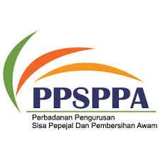

SELAMAT DATANG
PORTAL 1SPREC CENTRE
PERBADANAN PENGURUSAN SISA PEPEJAL DAN PEMBERSIHAN AWAM (PPSPPA)
MASUK PENAFIAN
Close
Penafian:
Perbadanan Pengurusan Sisa Pepejal Dan Pembersihan Awam tidak bertanggungjawab di atas kehilangan atau kerosakan disebabkan penggunaan mana-mana maklumat yang diperolehi daripada laman ini.